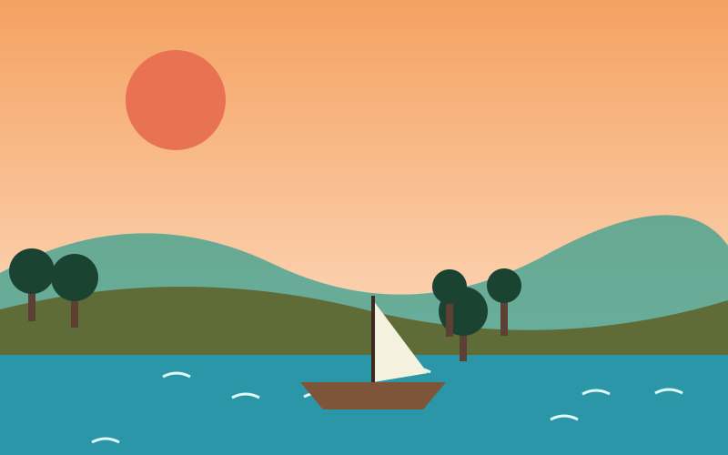

A Country Shaped by Water
Bangladesh sits on the largest river delta in the world, where the Padma, Jamuna and Meghna rivers meet before flowing into the Bay of Bengal. Life here has always followed the rhythm of the rivers — they feed the farms, carry the boats and shape the culture of more than 170 million people.
From the busy streets of Dhaka to quiet villages surrounded by water, travellers find a country full of colour, history and friendly faces. This website is a small guide to the places, food and traditions that make Bangladesh special.


Why Visit?
Bangladesh is home to the Sundarbans, the largest mangrove forest on Earth, and Cox's Bazar, one of the longest natural sea beaches. Its hills in the north-east are covered with tea gardens, and its cities hold centuries-old mosques, temples and palaces.
Use the navigation bar above to explore top destinations, taste the local food, and learn about the culture and festivals. Ready to go? Visit the contact page to plan your trip.
Start Exploring